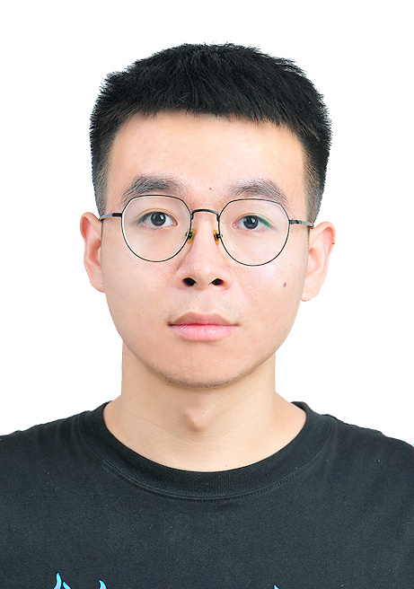
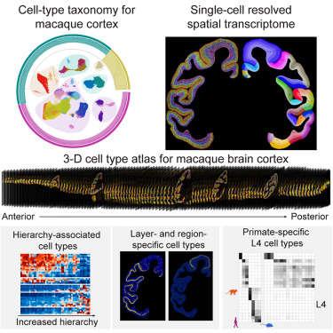
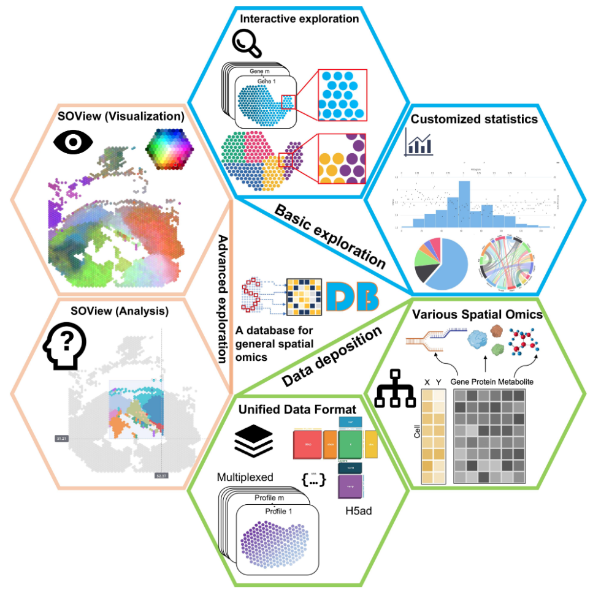
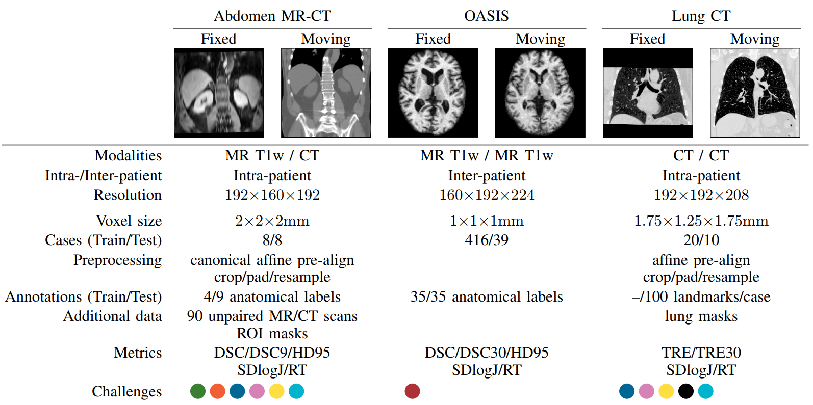
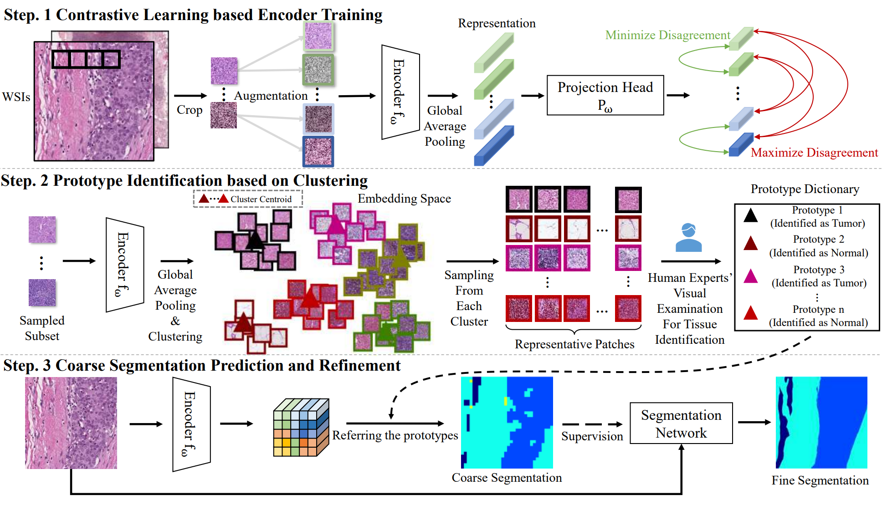

Wentao PanMaster student
Tsinghua University |

|


Biography
I am a year-2 master student at Tsinghua University, under the supervision of Prof. Xiu Li. Before that, I obtain B.Eng in Software Engineering from University of Electronic Science and Technology of China in 2021.
My research interest lies in artificial intelligence for healthcare. Recently I'm focusing on label-efficient learning (e.g.: semi/weakly/self supervised learning) on image modality and analysis of spatial omics data. Collaboration is warmly welcomed!
News
- [07/2023] 1 joint paper on macaque cortex analysis with single-cell spatial transcriptome was accepted by Cell (IF:66.85)!
- [02/2023] ProtoSeg on active histopathology analysis was accepted by IPMI 2023 (oral)!
- [01/2023] SODB on spatial omics data was accepted by Nature Method (IF:47.99)!
- [10/2022] 1 joint paper Learn2Reg on DL-oriented multi-task image registration benchmark was accepted by IEEE TMI!
Experience
-
Tencent AI Lab, Shenzhen, ChinaMay. 2022 – Mar. 2023
Research Intern
Advisor: Dr. Jianhua Yao (AIMBE Fellow), Dr. Hanbo Chen
Publications
| /*Journal*/ | |
|  |
Single-cell spatial transcriptome reveals cell-type organization in macaque cortex
Full Author List: Ao Chen*, Yidi Sun*, Ying Lei*, Chao Li*, Sha Liao*, Juan Meng*, Yiqin Bai*, Zhen Liu*, Zhifeng Liang*, Zhiyong Zhu*, Nini Yuan*, Hao Yang*, Zihan Wu*, Feng Lin, Kexin Wang, Mei Li, Shuzhen Zhang, Meisong Yang, Tianyi Fei, Zhenkun Zhuang, Yiming Huang, Yong Zhang,, Yuanfang Xu, Luman Cui, Ruiyi Zhang, Lei Han, Xing Sun, Bichao Chen, Wenjiao Li, Baoqian Huangfu,, Kailong Ma, Jianyun Ma, Zhao Li, Yikun Lin, He Wang, Yanqing Zhong, Huifang Zhang, Qian Yu, Yaqian Wang, Xing Liu, Jian Peng, Chuanyu Liu, Wei Chen, Wentao Pan, Yingjie An, Shihui Xia, Yanbing Lu, Mingli Wang, Xinxiang Song, Shuai Liu, Zhifeng Wang, Chun Gong,, Xin Huang, Yue Yuan, Yun Zhao, Qinwen Chai, Xing Tan, Jianfeng Liu, Mingyuan Zheng, Shengkang Li, Yaling Huang, Yan Hong, Zirui Huang, Min Li, Mengmeng Jin, Yan Li, Hui Zhang, Suhong Sun, Li Gao, Yinqi Bai, Mengnan Cheng, Guohai Hu, Shiping Liu,, Bo Wang, Bin Xiang, Shuting Li, Huanhuan Li, Mengni Chen, Shiwen Wang, Minglong Li, Weibin Liu, Xin Liu, Qian Zhao, Michael Lisby, Jing Wang, Jiao Fang, Yun Lin, Qing Xie, Zhen Liu, Jie He, Huatai Xu, Wei Huang, Jan Mulder, Huanming Yang, Yangang Sun, Mathias Uhlen, Muming Poo, Jian Wang, Jianhua Yao, Wu Wei, Yuxiang Li,, Zhiming Shen, Longqi Liu, Zhiyong Liu, Xun Xu, and Chengyu Li
Cell, 2023. (IF: 66.85, JCR-Q1) [paper, data, code] |
|  |
SODB facilitates comprehensive exploration of spatial omics data Zhiyuan Yuan*, Wentao Pan*, Xuan Zhao, Fangyuan Zhao, Zhimeng Xu, Xiu Li, Yi Zhao, Michael Q. Zhang, Jianhua Yao. Nature Method, 2023.(IF: 47.99, JCR-Q1) [paper, website] |
|  |
Learn2Reg: comprehensive multi-task medical image registration challenge, dataset and evaluation in the era of deep learning Wentao Pan, Zhe Xu (ADLReg | THU Team)
Full Author List: Alessa Hering, Lasse Hansen, Tony C. W. Mok, Albert C. S. Chung, Hanna Siebert, Stephanie Häger, Annkristin Lange, Sven Kuckertz, Stefan Heldmann, Wei Shao, Sulaiman Vesal, Mirabela Rusu, Geoffrey Sonn, Théo Estienne, Maria Vakalopoulou, Luyi Han, Yunzhi Huang, Pew-Thian Yap, Mikael Brudfors, Yaël Balbastre, Samuel Joutard, Marc Modat, Gal Lifshitz, Dan Raviv, Jinxin Lv, Qiang Li, Vincent Jaouen, Dimitris Visvikis, Constance Fourcade, Mathieu Rubeaux, Wentao Pan, Zhe Xu, Bailiang Jian, Francesca De Benetti, Marek Wodzinski, Niklas Gunnarsson, Jens Sjölund, Daniel Grzech, Huaqi Qiu, Zeju Li, Alexander Thorley, Jinming Duan, Christoph Großbröhmer, Andrew Hoopes, Ingerid Reinertsen, Yiming Xiao, Bennett Landman, Yuankai Huo, Keelin Murphy, Nikolas Lessmann, Bram van Ginneken, Adrian V. Dalca, Mattias P. Heinrich
IEEE Transactions on Medical Imaging (TMI), 2022. (IF: 11.037, JCR-Q1) [paper, page] |
| /*Conference*/ | |
|  |
Human-machine Interactive Tissue Prototype Learning for Label-efficient Histopathology Image Segmentation Wentao Pan*, Jiangpeng Yan*, Hanbo Chen*, Jiawei Yang, Zhe Xu, Xiu Li, Jianhua Yao. Information Processing in Medical Imaging (IPMI), 2023.(Oral) [paper, code] |
Honors & Awards
| 2018/2020, China National Scholarship (for undergraduate) |
| 2021, Outstanding Graduate of Sichuan |